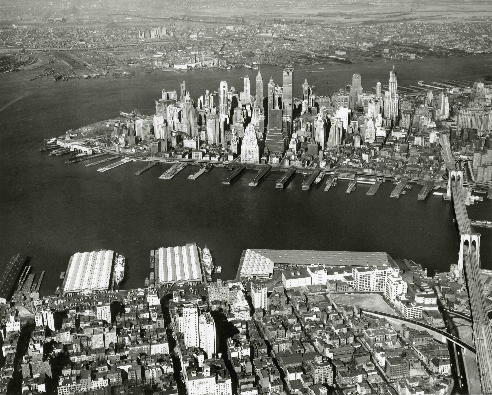

Historia
1 Fundación y Colonización (1624-1776)
En 1624, la ciudad de Nueva York, entonces conocida como Nueva Ámsterdam, fue fundada por los neerlandeses en la isla de Manhattan. En 1664, los ingleses tomaron el control y la rebautizaron como Nueva York. Durante la Revolución Americana, la ciudad fue un importante bastión británico hasta 1783.
2Parte 2: Crecimiento y Comercio (1776-1865)
Tras la independencia, Nueva York creció como un puerto clave para el comercio y la inmigración. El Canal Erie en 1825 impulsó su expansión. Durante la Guerra Civil, la ciudad apoyó a la Unión.
3 Época Dorada y Emigración (1865-1930)
La ciudad experimentó un período de auge durante la Gilded Age, caracterizado por la industrialización y la acumulación de riqueza. La llegada de inmigrantes europeos en gran número y el surgimiento de rascacielos en Manhattan definieron esta época.
4 Crisis y Renacimiento (1930-1970)
La Gran Depresión y la decadencia urbana afectaron gravemente a Nueva York en la década de 1930. Sin embargo, el New Deal de Franklin D. Roosevelt y proyectos de revitalización como el Rockefeller Center ayudaron a la recuperación de la ciudad.
5 Renovación y Desafíos (1970-2000)
Nueva York enfrentó desafíos económicos y sociales en la década de 1970, pero experimentó una revitalización en los años 90. El ataque del 11 de septiembre de 2001 dejó una profunda huella en la ciudad, redefiniendo su seguridad y su carácter.
Nueva York hoy

Hoy, Nueva York sigue siendo un epicentro global de cultura, finanzas y tecnología. La diversidad étnica y cultural, el turismo mundial, los emblemáticos rascacielos y eventos culturales como Broadway siguen definiendo su atractivo. Aunque enfrenta desafíos como la vivienda asequible y el cambio climático, Nueva York continúa siendo una metrópolis vibrante, en constante evolución y un faro de la vida urbana en el siglo XXI.